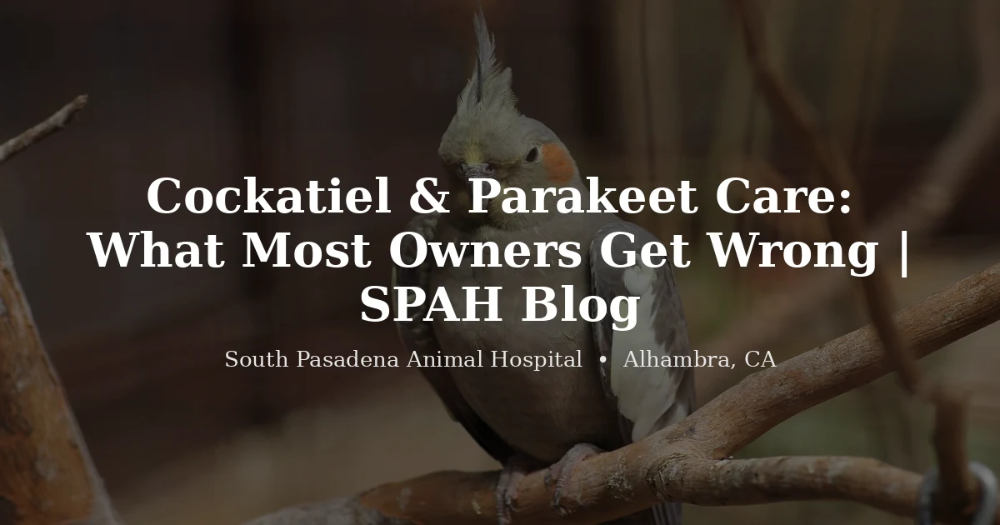

April 9, 2026 · 9 min read
Cockatiel & Parakeet Care: What Most Owners Get Wrong 🦜

Here's the thing about cockatiels and budgies: they're so common that people forget they're complicated. You can buy a budgie at a pet store in Alhambra for $25. You can pick up a cockatiel in San Gabriel for $80. They come home, they sit on a perch, they chirp. Seems easy. And then three years in, something goes wrong and the owner realizes they've never once taken this bird to a vet.
We're not judging. It happens constantly. Cockatiels and parakeets are the most popular pet birds in the country, and they're also the ones with the biggest gap between what owners think they need and what they actually need. At South Pasadena Animal Hospital, a huge chunk of our avian appointments are cockatiels and budgies coming in for something that's been building for months.
So let's talk about what to actually watch for, what most people get wrong, and when to bring your bird in.
The Seed Diet Problem
This is the single biggest issue we see. It's not even close.
Most cockatiels and parakeets in the San Gabriel Valley are eating an all-seed diet because that's what the pet store sold with the bird. Seeds come in a pretty bag with a picture of a happy cockatiel on it. Seems legit. The bird eats them enthusiastically. Everyone's happy.
Except an all-seed diet for a cockatiel or budgie is like eating nothing but French fries for every meal. Seeds are high in fat, low in vitamins, and missing most of what these birds need. The result, over time:
- Fatty liver disease — the number one killer of budgies on bad diets
- Vitamin A deficiency — leads to respiratory problems, mouth sores, poor feather quality
- Obesity — especially in cockatiels, who are already prone to getting chunky
- Shorter lifespan — a well-cared-for cockatiel can live 20+ years. On an all-seed diet? Often 8-12.
What they should be eating: a pellet-based diet (Harrison's, Roudybush, or similar) as 60-70% of their food, supplemented with fresh vegetables — dark leafy greens, carrots, sweet potato, bell peppers. Seeds as a treat, not a staple. Yes, the bird will resist the switch. They always do. It takes patience and persistence, sometimes weeks. But this single change adds years to their life.
If you're in Pasadena or Highland Park and your cockatiel has been on seeds for years, it's not too late to switch. But get a wellness exam first so we can check the liver and make sure there isn't damage we need to address while you transition the diet.
Respiratory Issues — The Silent Buildup
Birds have an incredibly efficient respiratory system — air sacs, flow-through ventilation, the whole setup. It's beautiful engineering. It also means they're extremely sensitive to airborne irritants that wouldn't bother a dog or cat.
Things that can cause respiratory problems in cockatiels and parakeets:
- Non-stick cookware fumes (Teflon, PTFE) — this one can kill a bird in minutes. Not an exaggeration.
- Scented candles, air fresheners, incense
- Cleaning products used near the cage
- Cigarette or vape smoke
- Dusty environments with poor ventilation
We've had owners in South Pasadena bring in a cockatiel with breathing problems and not connect it to the new Teflon pan they bought last week. We've had budgies in Alhambra apartments come in wheezing because someone was burning incense in the same room every evening.
Signs your bird has a respiratory issue:
- Tail bobbing — the tail moves up and down with each breath. This is the big one. If you see tail bobbing, come in.
- Open-mouth breathing
- Clicking or wheezing sounds
- Nasal discharge or crusty nostrils
- Sneezing — occasional sneezing is normal, frequent sneezing is not
Respiratory infections in small birds move fast. A cockatiel that seems a little off on Monday can be in serious trouble by Wednesday. Don't take a wait-and-see approach with breathing problems.
Night Frights — The Cockatiel Thing
This one is specific to cockatiels, and if you've owned one, you probably know exactly what we're talking about.
Middle of the night. Total darkness. Suddenly your cockatiel is thrashing wildly in the cage, wings hitting bars, feathers flying, total chaos. By the time you get the light on, the bird is panting on the bottom of the cage, maybe bleeding from a broken blood feather. That's a night fright.
Cockatiels are uniquely prone to these panic episodes. Something startles them — a car headlight through the window, a noise, a shadow — and because it's pitch dark, they can't orient themselves. They just thrash. And in a cage, thrashing means hitting metal bars, breaking feathers, sometimes worse.
What helps:
- A dim nightlight near the cage so they can see if they wake up startled
- A partial cage cover that blocks sudden light changes but still lets some ambient light in
- Moving the cage away from windows where car headlights sweep through
- A quieter room away from the TV or front door
If your cockatiel has a night fright and breaks a blood feather, you may need to come in. A broken blood feather that won't stop bleeding is an emergency. Apply styptic powder or cornstarch and pressure first, but if the bleeding doesn't stop within a few minutes, call us.
The "My Bird Is Fine" Problem
This is the hardest conversation we have with bird owners, and we have it all the time.
Birds hide illness. This isn't a quirk — it's survival programming. In the wild, a sick bird that looks sick gets picked off by a predator or pushed out of the flock. So they fake it. They act normal, they eat (or pretend to eat), they sit on the perch looking perfectly fine. Until they can't anymore. And by that point, they've often been sick for weeks or months.
This is why we push for annual wellness exams for cockatiels and budgies, even when the owner says the bird is doing great. A physical exam and basic bloodwork can catch things the owner had no way of seeing from across the room:
- Early liver changes from a seed-heavy diet
- Subclinical infections
- Weight changes that aren't visible through feathers
- Crop or beak abnormalities
We weigh every bird that comes in. Weight is one of the most useful data points we have, and most owners don't have a gram scale at home. A cockatiel that's dropped from 95 grams to 80 grams looks exactly the same to you. To us, that's a 15% loss and something is going on.
Egg Binding — Female Birds at Risk
If you have a female cockatiel or budgie, you need to know about this one. Birds can lay eggs without a male present — they'll be infertile, but the bird doesn't know that. Chronic egg-laying is common in pet cockatiels and budgies, especially ones that are over-bonded with their owner or getting too many daylight hours.
Egg binding is when an egg gets stuck. The bird is trying to pass the egg and can't. This is a genuine emergency — it can be fatal.
Signs:
- Sitting fluffed up on the bottom of the cage
- Straining — visible effort to pass something
- Tail wagging or pumping
- Lethargy, not eating
- Swollen abdomen
If your female bird is on the cage floor, fluffed, straining, and not acting right — don't wait until tomorrow. Call us. You can put her in a warm, humid environment (a steamy bathroom works as a first aid step) while you arrange to come in, but egg binding needs veterinary intervention.
Prevention: reduce daylight hours to 10-12 per day (cover the cage early), don't provide nesting material or enclosed spaces in the cage, don't pet your bird along the back (it triggers hormonal behavior), and make sure the diet includes adequate calcium. If your hen is laying eggs regularly, talk to us about a hormone implant that can slow it down.
Household Dangers Owners Don't Think About
Living in Alhambra or anywhere in the SGV with a bird means sharing a small indoor space where things that are harmless to humans can be lethal to a 90-gram cockatiel. Beyond the Teflon fumes we mentioned, here's what we tell every new bird owner:
- Ceiling fans — if the bird is out, the fan is off. No exceptions.
- Open windows and doors — clipped wings don't guarantee a bird can't fly. A good gust of wind can carry a clipped cockatiel out the door and over the neighbor's house before you blink. We've heard this story from owners in Highland Park, Pasadena, and San Gabriel more times than we'd like.
- Other pets — cats are the obvious one, but dogs too. One playful swat from a cat and the bacteria alone can kill a bird within 48 hours, even if the wound looks minor.
- Avocado, chocolate, caffeine — toxic. Keep them away from the bird.
- Zinc and lead — older cages, zipper pulls, certain jewelry, and even some bells contain heavy metals. Birds chew on everything, and heavy metal toxicity is a real diagnosis we've made more than once.
When to Wait vs. When to Come In
Small birds have fast metabolisms and not a lot of reserves. The window between "a little off" and "critical" is shorter than you think.
Watch and monitor (12-24 hours max):
- Slightly quieter than usual but still eating and drinking normally
- One or two sneezes with no discharge
- A single loose dropping that goes back to normal
Come in within a day:
- Fluffed up for extended periods
- Eating less for 24 hours
- Sitting on the cage floor (birds that feel fine don't hang out on the bottom)
- Feather quality declining or unusual molting patterns
- Persistent sneezing
Come in now — don't wait:
- Tail bobbing, open-mouth breathing, any labored breathing
- Not eating at all
- Sitting fluffed on the cage floor, eyes closing
- Bleeding that won't stop (broken blood feather, wound)
- Signs of egg binding in a female bird
- Exposure to Teflon fumes, smoke, or toxic substances
- Found on the cage floor, weak or unresponsive
Finding a Bird Vet Near You
Most vet clinics in the San Gabriel Valley are set up for dogs and cats. Plenty of them will say they can see your bird, and some can — but there's a real difference between a clinic that sees three birds a year and one that sees them weekly.
We see cockatiels, parakeets, conures, African greys, and other birds regularly at our Alhambra clinic. Dr. Navia has a particular interest in avian medicine and sees the majority of our bird patients. If you're in South Pasadena, Pasadena, Highland Park, or San Gabriel and you've been looking for a vet who actually knows their way around a cockatiel — we're here.
Call us at (626) 441-1314 or book online. Bring your bird in for a wellness check, even if they seem fine. Especially if they seem fine.